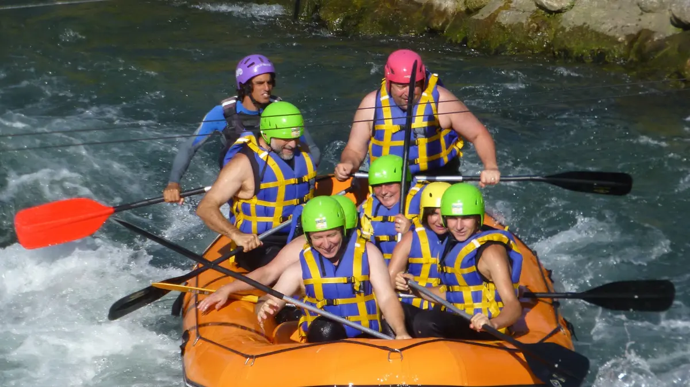

1. Apa Itu Vendor Outbound Perusahaan?
Bagi jajaran direktur dan HR manager di area Jabodetabek (Jakarta, Bogor, Depok, Tangerang, Bekasi), penyelenggaraan kegiatan luar ruang perusahaan bukan sekadar agenda rekreasi tahunan. Kegiatan ini adalah bentuk investasi strategis untuk merawat modal manusia (human capital), menyegarkan kembali motivasi kerja, serta merekatkan hubungan antardivisi.
Vendor outbound perusahaan adalah mitra profesional yang bertindak sebagai perancang skenario kegiatan, penyedia fasilitas teknis, serta fasilitator dinamika kelompok di alam terbuka. Peran vendor melampaui sekadar penyedia perlengkapan game; mereka bertanggung jawab memastikan bahwa seluruh rangkaian aktivitas berjalan aman, terstruktur, dan selaras dengan target organisasi yang telah ditetapkan.
2. Mengapa Perusahaan Menggunakan Jasa Vendor Outbound?
Mengorganisasi kegiatan outbound secara mandiri (in-house) sering kali membebani tim internal kepanitiaan kantor. Menghubungi pengelola venue, menyusun konsumsi, menyewa alat game, merancang rundown, hingga memikirkan prosedur darurat medis membutuhkan waktu dan tenaga yang tidak sedikit.
Dengan menggandeng penyedia paket outbound perusahaan yang profesional, manajemen mendapatkan sejumlah keuntungan nyata:
- Efisiensi Waktu & Fokus Kerja: Panitia internal tidak perlu disibukkan dengan operasional teknis lapangan dan dapat fokus pada koordinasi internal peserta.
- Objektivitas Dinamika Tim: Fasilitator eksternal dapat mengamati interaksi antarkaryawan secara netral tanpa terpengaruh hierarki jabatan formal di kantor.
- Manajemen Risiko & Keamanan: Vendor memiliki standar operasional prosedur (SOP) keselamatan, perlengkapan standar, dan pemahaman rute evakuasi di lokasi kegiatan.

Game Outbound Seru untuk Karyawan
Kumpulan ide permainan outbound segar untuk mencairkan komunikasi dan membangkitkan kebersamaan tim kerja.
3. Apa yang Membuat Vendor Outbound Layak Dipertimbangkan?
Pertanyaan yang sering muncul di benak para pengambil keputusan HR adalah: "Bagaimana membedakan vendor yang hanya menyediakan permainan biasa dengan vendor yang benar-benar memahami kebutuhan program perusahaan?"
Vendor yang layak dipertimbangkan umumnya menunjukkan karakteristik profesional berikut:
- Mendengarkan Analisis Kebutuhan: Vendor memulai proses dengan menggali latar belakang tantangan tim, bukan langsung menyodorkan paket harga tanpa konteks.
- Rundown Terstruktur & Realistis: Memiliki alokasi waktu yang seimbang antara sesi energi tinggi, waktu istirahat, ibadah, dan sesi refleksi bersama.
- Transparansi Rincian Fasilitas: Menjelaskan secara gamblang apa saja fasilitas yang termasuk dan item apa saja yang belum termasuk dalam penawaran.
- Komunikasi yang Responsif: Cepat dalam memberikan tanggapan, terbuka terhadap penyesuaian (custom), dan fleksibel mengakomodasi kebutuhan khusus peserta.

Aktivitas luar ruang yang dirancang matang mampu membangun keterbukaan komunikasi dan kerja sama antardivisi secara berkelanjutan.
4. Cara Mengevaluasi Ragam Modul Program Outbound
Setiap perusahaan memiliki tujuan yang unik. Pastikan calon vendor memiliki kejelasan pada ragam modul program berikut:
A. Program Team Building Perusahaan
Modul team building perusahaan dirancang untuk memperkuat sinergi kerja, menyelaraskan persepsi antaranggota tim, melatih pemecahan masalah bersama, dan membangun rasa saling percaya (trust). Simulasi dalam modul ini memiliki tingkat tantangan bertingkat dan selalu diakhiri dengan sesi evaluasi.
B. Program Fun Games & Refreshing
Jika prioritas utama adalah memberikan hiburan, mencairkan kebekuan antarkaryawan baru, atau merayakan pencapaian target kerja, modul fun games perusahaan menjadi pilihan tepat. Aktivitas didominasi permainan ringan, gelak tawa, dan kompetisi ceria.
C. Leadership Camp
Dikhususkan untuk level supervisor, manajer, atau talenta pemimpin masa depan. Modul ini berfokus pada pengambilan keputusan strategis di bawah tekanan waktu, komunikasi delegatif, dan manajemen konflik kelompok.
D. Corporate Gathering & Family Day
Program berskala besar yang menggabungkan aktivitas kebersamaan di lapangan terbuka dengan panggung hiburan, gala dinner, atau pembagian apresiasi perusahaan (awarding night).

Kesalahan Team Building Kantor
Pahami penyebab mengapa kegiatan outbound kantor sering gagal mencapai tujuan dan bagaimana cara mengatasinya.
5. Matriks Kriteria Evaluasi Vendor Outbound Perusahaan
Gunakan tabel panduan berikut untuk mengevaluasi proposal dari calon vendor outbound:
| Kriteria | Yang Perlu Dicek | Risiko Jika Diabaikan |
|---|---|---|
| Tujuan Program | Apakah aktivitas sesuai tujuan perusahaan? | Kegiatan tidak memiliki arah yang jelas |
| Program | Apakah rundown dan aktivitas jelas? | Peserta kurang memahami alur kegiatan |
| Safety | Apakah risiko aktivitas diperhitungkan? | Risiko keselamatan peserta meningkat |
| Fasilitator | Apakah briefing dan koordinasi jelas? | Aktivitas kurang terarah dan pasif |
| Fleksibilitas | Apakah program dapat disesuaikan? | Modul tidak sesuai kebutuhan peserta |
| Fasilitas | Apa saja fasilitas yang termasuk? | Muncul biaya tak terduga / ketidakjelasan |
| Penawaran | Apakah rincian biaya jelas & transparan? | Sulit membandingkan penawaran vendor |
| Komunikasi | Apakah vendor responsif dan komunikatif? | Koordinasi persiapan kegiatan terganggu |

Keberadaan fasilitator yang komunikatif memastikan setiap instruksi permainan dapat dipahami dengan baik oleh seluruh peserta.
6. Standar Keselamatan, Lokasi, dan Fasilitas Kegiatan
Penyelenggaraan outbound di area Jakarta, Bogor (Puncak, Sentul, Ciawi), maupun Sukabumi menuntut perhatian khusus pada kondisi geografis:
- Safety Management: Calon vendor harus memiliki kesiapan P3K standar di lokasi, pengawasan titik rawan, serta rencana evakuasi darurat ke fasilitas kesehatan terdekat.
- Pemilihan Lokasi & Kapasitas: Venue harus memiliki daya tampung yang seimbang dengan jumlah peserta, area berteduh yang memadai, serta toilet dan musholla yang bersih dan layak.
- Kualitas Fasilitator: Fasilitator harus mampu menyampaikan briefing secara runtut, membangun suasana yang menyenangkan, dan mengendalikan dinamika kelompok tanpa intimidasi.
7. Checklist dan Pertanyaan Kunci Saat Menghubungi Vendor
Saat melakukan seleksi awal, ajukan pertanyaan-pertanyaan berikut kepada representatif vendor:
- Bagaimana rancangan rundown acara disesuaikan dengan profil usia dan fisik peserta kami?
- Apa saja skenario alternatif (Plan B) jika terjadi cuaca hujan lebat di lokasi terbuka?
- Rincian apa saja yang sudah termasuk dalam harga paket (konsumsi, tiket masuk, sound system, dokumentasi, fasilitator)?
- Bagaimana rasio jumlah fasilitator lapangan berbanding total peserta kami?
8. Tentang Vendor Outbound
Profil Vendor Outbound
Vendor Outbound merupakan penyedia layanan outbound yang berfokus pada pengembangan sumber daya manusia melalui aktivitas kreatif dan inovatif. Topik program yang disediakan dapat mencakup:
- Teamwork (Kerja Sama Tim)
- Leadership (Kepemimpinan)
- Komunikasi Efektif
- Problem Solving (Pemecahan Masalah)
- Kreativitas & Inovasi
- Employee Engagement
- Fun Games & Rekreasi
- Corporate Gathering & Outing
Pendekatan kami menitikberatkan pada penyesuaian modul program sesuai sasaran internal organisasi, transparansi proposal, serta pendampingan menyeluruh mulai dari tahap perencanaan hingga pelaksanaan acara.

Paket Fun Games Perusahaan
Simulasi aktivitas rekreasi luar ruang untuk membangun suasana santai dan kebersamaan tim.
Sedang Menyiapkan Kegiatan Outbound Perusahaan?
Sedang menyiapkan kegiatan outbound perusahaan? Konsultasikan kebutuhan peserta, tujuan kegiatan, pilihan program, dan konsep acara bersama Vendor Outbound melalui WhatsApp +62 82211221909.
Pertanyaan yang Sering Diajukan (FAQ)

Arby Ardiansyah
Praktisi pengembangan SDM dan perancang program experiential learning dengan pengalaman memfasilitasi berbagai kegiatan outbound korporat, institusi, dan team building di Indonesia.